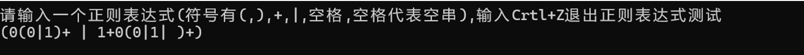
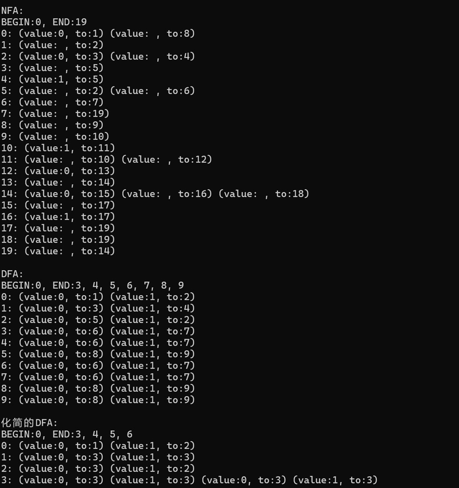
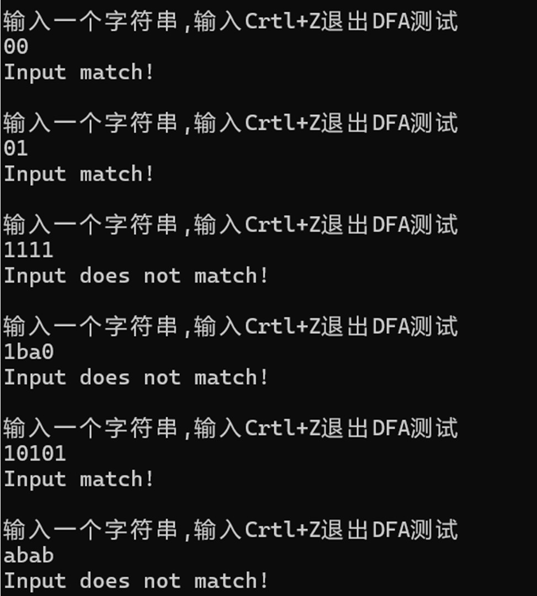

# 项目说明
项目背景
本项目为编译原理课设作业之一，通过输入给定的正则表达式，构建该正则表达式对应的非确定有穷自动机 NFA，然后根据该 NFA 转换为确定有穷自动机 DFA，最后对该确定有穷自动机 DFA 最小化为最简 DFA。得到最简 DFA 后，可以对用户输入的符号串进行判断是否符合正则表达式的要求。
数据结构
本实验使用的数据结构以及相关定义如下：
- 状态转换表
data用邻接表存储。 - 用集合存储最小化 DFA 过程中因子集划分法产生的状态组。
- 用栈存储正则表达式中的操作符。
- 正则表达式中的空串用空格代表。
实验配置
VSCode，c 语言。
# 源码
#include<stdio.h> | |
#include<string.h> | |
#include<stdlib.h> | |
#define MAXN 1000 //! 定义最大数量 | |
#define Visible_letter_count (Visible_letter_max - Visible_letter_min + 1) // 可视字符数量 | |
#define Visible_letter_min 32 // 可视字符最小值 | |
#define Visible_letter_max 126 // 可视字符最大值 | |
const char kong = ' ';//! 空格代表空串 | |
//-a->to | |
typedef struct NODE | |
{ | |
int to;//1 | |
char a;//a | |
}NODE; | |
typedef struct FA //! 用结构体定义自动机 FA | |
{ | |
int n, BEGIN;//!n 为节点个数（包括空节点），BEGIN 为初态 | |
int ENDS[MAXN/100], len_ENDS;//! 定义终态集数组，以及数组长度 | |
NODE data[MAXN][MAXN]; //!data 记录状态转换 | |
int len[MAXN];//! 方便处理，记录 data 每一行的长度 | |
char alphabet[Visible_letter_count];//! 字母表 | |
int len_alph;//! 字母表的长度 | |
}FA; | |
typedef struct BE//! 正则表达式转 NFA 时，用于记录一个 NFA 的初态和终态 | |
{ | |
int BEGIN; | |
int END; | |
}BE; | |
//------------------------------------------------------------------------------1// | |
int IsEND(FA *fa, int a)// 判断一个节点是否为终态 | |
{ | |
for (int i = 0; i < fa->len_ENDS; i++) | |
{ | |
if (a == fa->ENDS[i]) return 1;// 如果集合中包含之前 NFA 中的终态，那么该集合就是 DFA 中的终态 | |
} | |
return 0; | |
} | |
int insert(FA *fa, int from, int to, char a) | |
{ | |
int i; | |
//! 这里是排除异常的情况，保证所加节点在范围内 | |
if (from >= fa->n) //! 检查起始节点 from 是否在当前的节点数量 fa->n 范围外。如果是，则表示 from 节点尚未存在。 | |
{ | |
if (fa->n >= MAXN) {printf("Error:节点个数过多!"); return 1;}//! 节点个数是否超出最大值 | |
fa->len[fa->n++] = 0; | |
} | |
if (to >= fa->n) //! 同样地，检查目标节点 to 是否超出当前节点数量的范围。如果超出，则为 to 创建一个新节点。 | |
{ | |
if (fa->n >= MAXN) {printf("Error:节点个数过多!"); return 1;}// 节点个数是否超出最大值 | |
fa->len[fa->n++] = 0; | |
} | |
//! 判断节点是否已经存在，如果已经存在，则不再添加 | |
for (i = 0; i < fa->len[from]; i++) | |
if ((fa->data[from][i]).a == a && (fa->data[from][i]).to == to) return 0; | |
if (fa->len[from] >= MAXN) return 1; | |
//! 插入节点 | |
(fa->data[from][fa->len[from]]).a = a; | |
(fa->data[from][fa->len[from]++]).to = to; | |
return 0; | |
} | |
void initAlphabet(FA *fa)// 初始化字母表 | |
{ | |
fa->len_alph = 0; | |
int temp[Visible_letter_count] = {0};// 哈希表 | |
for (int i = 0; i < fa->n; i++) | |
{ | |
for (int j = 0; j < fa->len[i]; j++) | |
{ | |
int a = fa->data[i][j].a; | |
if (a != ' ') temp[a-Visible_letter_min] = 1; | |
} | |
} | |
for (int i = 0; i < Visible_letter_count; i++) | |
if (temp[i]) | |
fa->alphabet[fa->len_alph++] = i + Visible_letter_min; | |
} | |
int to(FA *fa, int from, char a)//! 计算 from 节点输入 a 时的下一个节点 | |
{ | |
for (int i = 0; i < fa->len[from]; i++) | |
if (fa->data[from][i].a == a) return fa->data[from][i].to; | |
return -1; | |
} | |
int AndFa(FA *fa, BE *stack_FA, int *len_stack_FA)// 正则表达式转 NFA 时的连接操作 | |
{ | |
//! 将栈中两个 NFA 通过 ε（空字符串）连接起来，生成一个新的 NFA。具体将两个 NFA 的结束状态通过 ε 连接成一个新的 NFA。 | |
if (*len_stack_FA < 2) return 1; //! 要求栈至少有两个元素。因为连接操作需要从栈中弹出两个 NFA, 一个起始状态 BEGIN 和一个结束状态 END | |
//! 从栈中弹出两个 NFA 的起始和结束状态。 | |
int b = stack_FA[--*len_stack_FA].BEGIN; | |
int e = stack_FA[*len_stack_FA].END; | |
int b1 = stack_FA[--*len_stack_FA].BEGIN; | |
int e1 = stack_FA[*len_stack_FA].END; | |
//! 将两个 NFA 通过一个 ε（空字符串）连接起来 | |
if (insert(fa, e1, b, kong)) return 1; | |
//! 更新栈状态 | |
stack_FA[*len_stack_FA].BEGIN = b1; | |
stack_FA[(*len_stack_FA)++].END = e; | |
return 0; | |
} | |
int OrFa(FA *fa, BE *stack_FA, int *len_stack_FA)//! 正则表达式转 NFA 时的 | 操作，在正则表达式中，a|b 表示要么匹配 a，要么匹配 b， | |
{//! 这意味着在某个状态之后，我们可以有两条可能的路径：一条通向 a，另一条通向 b | |
if (*len_stack_FA < 2) return 1; //! 这个条件判断是为了确保栈中有至少两个元素。 | |
int b = stack_FA[--*len_stack_FA].BEGIN; | |
int e = stack_FA[*len_stack_FA].END; | |
int b1 = stack_FA[--*len_stack_FA].BEGIN; | |
int e1 = stack_FA[*len_stack_FA].END; | |
//! 这里，栈的栈顶元素是当前正在处理的正则子表达式的状态。每个栈元素 stack_FA 包含 BEGIN 和 END，分别表示该子表达式的初态和终态。 | |
if (insert(fa, b1, b, kong)) return 1; | |
if (insert(fa, e1, e, kong)) return 1; | |
//! 插入两条可能的空串边 | |
//! 所以新的自动机的初态是 b1，终态是 e，更新栈 | |
stack_FA[*len_stack_FA].BEGIN = b1; | |
stack_FA[(*len_stack_FA)++].END = e; | |
return 0; | |
} | |
// 将正则表达式转换成 NFA | |
int ReToNFA(char *re, FA *nfa)// 此处用 & amp; 代表连接 | |
{ | |
nfa->len_ENDS = 0; //! 首先，初始化终态集的个数为 0 个 | |
if (*re != '\0') //! 这是判断我们输入的正则表达式不是空的 | |
{ | |
//! 我们定义 len_stack_op：记录栈顶指针的位置 len_stack_FA：记录栈中元素个数 | |
int len_stack_op = 1, len_stack_FA = 0; | |
//! 下面用数组定义一个存储操作符的栈 temp 用来辅助分析 & amp; 操作 | |
char stack_op[MAXN] = {'('}, temp; //! 在 re 的开始和结束添加括号，方便计算 | |
BE stack_FA[MAXN]; //! 同样为了便于处理，定义一个存放初态到终态的数组 | |
nfa->n = 0; //! 初始化 NFA 目前存储的节点个数为 0 | |
strcat(re, ")"); //! 同样，在 re 的开始和结束添加括号，方便计算 | |
while (*re != '\0') //! 开始处理，这里 * re 代表正则表达式每一个符号 | |
{ | |
switch (*re) //! 现在分析每一个符号 | |
{ | |
case '(': | |
if (len_stack_op >= MAXN) {printf("Error:正则表达式过长!"); return 1;} // 判断栈是否溢出 | |
stack_op[len_stack_op++] = '('; //! 把左括号入栈 | |
break; | |
//! 接着看字符处理 | |
case ')': //! 处理右括号 | |
while (1)//! 遇到右括号时，执行栈中的运算，直到遇到匹配的左括号 | |
{ | |
if (len_stack_op < 1) return 1;//! 当前遇到一个右括号，则栈内必有一个左括号与之匹配。如果栈空，代表正则表达式括号不匹配 | |
if (stack_op[--len_stack_op] == '(') break; //! 如果栈顶就是左括号，则直接匹配 | |
//! 给定有一对 & amp; 和 |，在栈内他们的相对位置，肯定是 & amp; 更靠近栈顶，因为是逆向进栈，比如 ()&()|() | |
if (stack_op[len_stack_op] == '&') | |
{ | |
if (AndFa(nfa, stack_FA, &len_stack_FA)) return 1; | |
} | |
else if (stack_op[len_stack_op] == '|') | |
{ | |
if (OrFa(nfa, stack_FA, &len_stack_FA)) return 1; | |
} | |
} | |
//! 我们还要考虑下一个符号，如果下一个输入是左括号或字符，则存在隐式的 & amp; 连接，需要添加一个 & amp; | |
temp = *(re+1); | |
if (temp != 0 && temp != ')' && temp != '+' && temp != '|') // 如果下一个字符不是 ), +, 或 |（即它可能是字母或者其他字符），表示接下来会有与操作符（&）的隐式连接。 | |
{ | |
if (len_stack_op > 0 && stack_op[len_stack_op-1] == '&')// 如正则表达式中前面有 &，那么需要先执行 & amp; 连接操作 | |
{ | |
len_stack_op--; | |
if (AndFa(nfa, stack_FA, &len_stack_FA)) return 1; | |
} | |
if (len_stack_op >= MAXN) return 1; | |
stack_op[len_stack_op++] = '&';//()b | |
} | |
break; | |
case '+'://! 正闭包 | |
if (len_stack_FA < 1) return 1; | |
//! 这里检查 stack_FA 栈中的状态是否足够。如果栈中没有状态，则返回错误 | |
if (insert(nfa, stack_FA[len_stack_FA-1].END, stack_FA[len_stack_FA-1].BEGIN, kong)) return 1; | |
//! 如果这个正闭包作用在一个终结符（如字母）上，insert 函数将会创建一条转换路径回到自己，表示这个终结符状态可以自循环。 | |
//! 正符合了正闭包操作可以使状态重复回到自身，即为 X+。 | |
//! 不是终结符，是操作符 | |
temp = *(re+1); | |
if (temp != 0 && temp != ')' && temp != '+' && temp != '|') //! 同样考虑有没有隐式连接 | |
{ | |
if (len_stack_op > 0 && stack_op[len_stack_op-1] == '&') //! 如用户输入 ab+b，相当于 a&b+b，需要对与进行考虑 | |
{ | |
len_stack_op--; | |
if (AndFa(nfa, stack_FA, &len_stack_FA)) return 1; | |
} | |
if (len_stack_op >= MAXN) return 1; | |
stack_op[len_stack_op++] = '&'; //! 必须考虑正则表达式潜在的与运算 | |
} | |
break; | |
case '|': //! 因为优先级与大于或，且与和或都是双目运算符 如 a&b|c | |
if (len_stack_op > 0 && stack_op[len_stack_op-1] == '&')//! 前面有 & amp; 则先做与运算 | |
{ | |
len_stack_op--; | |
if (AndFa(nfa, stack_FA, &len_stack_FA)) return 1; | |
} | |
if (len_stack_op > 0 && stack_op[len_stack_op-1] == '|')//! 如果前面有 | 先做前面的或 | |
{ | |
len_stack_op--; | |
if (OrFa(nfa, stack_FA, &len_stack_FA)) return 1; | |
} | |
if (len_stack_op >= MAXN) return 1; | |
stack_op[len_stack_op++] = '|'; //! 将此次的或进栈 a| | |
break; | |
default: //! 这里检测到非操作符 | |
//! 当遇到字符，在状态表插入节点 | |
if (insert(nfa, nfa->n, nfa->n+1, *re)) return 1; | |
//! 更新状态，将这次初态到终态记录 | |
if (len_stack_FA >= MAXN) return 1; | |
stack_FA[len_stack_FA].BEGIN = nfa->n-2; | |
stack_FA[len_stack_FA++].END = nfa->n-1; | |
//! 预判下一个字符是不是字母，如果是操作符，则进一步处理 | |
temp = *(re+1); //! 取出下一个符号 | |
if (temp != 0 && temp != ')' && temp != '+' && temp != '|') //! 如果下一个字符不是), +, 或 |（即它可能是字母或者其他字符）， | |
//! 表示接下来会有与操作符（&）的隐式连接。比如 ab 其实就是 a&b | |
{ | |
if (len_stack_op > 0 && stack_op[len_stack_op-1] == '&')//! 如果当前读取字符前面又包含一个 & amp; 如 a&bb，那么首先要处理这个 & amp; | |
{ | |
len_stack_op--; | |
if (AndFa(nfa, stack_FA, &len_stack_FA)) return 1; //! 处理 & amp; | |
} | |
if (len_stack_op >= MAXN) {printf("Error:栈溢出!行:217"); return 1;} | |
stack_op[len_stack_op++] = '&'; //! 否则将与操作入栈 ab，选择引入 & amp; 是为了让处理更加有逻辑 | |
} | |
} | |
re++; //! 正则表达式数组头往后移动一位，表示读取正则表达式的下一个符号 | |
} | |
if (len_stack_op > 0 || len_stack_FA > 1) return 1; | |
//! 更新 | |
nfa->BEGIN = stack_FA[0].BEGIN;//! 初态 | |
nfa->ENDS[nfa->len_ENDS++] = stack_FA[0].END;//! 在此处只有一个终态 | |
initAlphabet(nfa); | |
} | |
else | |
{ | |
//! 如果输入的正则表达式是空 | |
nfa->n = 2; //! 节点个数是 2 个，从初态到终态 | |
nfa->BEGIN = nfa->len[0] = nfa->len[1] = 0; //! 两个状态转换均为空 | |
nfa->ENDS[nfa->len_ENDS++] = 1; //! 记录终态集 | |
} | |
return 0; | |
} | |
typedef struct SET// 集合 | |
{ | |
int n; // 记录当前 t 中的元素个数 | |
int t[MAXN]; | |
}SET; | |
int set_insert(SET *set, int a)// 集合插入 | |
{ | |
int i; | |
for (i = 0; i < set->n; i++) if ((set->t)[i] == a) return 1; | |
if (set->n >= MAXN) return -1; | |
(set->t)[set->n++] = a; | |
return 0; | |
} | |
int set_delete(SET *set, int a)// 删除集合的一个元素 | |
{ | |
int i; | |
for (i = 0; i < set->n; i++) if (set->t[i] == a) break; | |
if (i == set->n) return -1; | |
for (int j = i + 1; j < set->n; j++) set->t[j - 1] = set->t[j]; | |
set->n--; | |
return 0; | |
} | |
// 查找集合 sets [sets_n] 与前面的那个集合一样，如果没有一样的，则将 sets [sets_n] 加入 sets | |
// 集合内部是有序的 | |
int if_same(SET *sets, int *sets_n) | |
{ | |
int i, j, len = sets[*sets_n].n; | |
for (i = 0; i < *sets_n; i++) | |
{ | |
if (sets[i].n != len) continue; | |
for (j = 0; j < len; j++) | |
if (sets[i].t[j] != sets[*sets_n].t[j]) break; | |
if (j == len) | |
{ | |
return i; | |
} | |
} | |
return (*sets_n)++; | |
} | |
int cmp(const void* _a , const void* _b)// 用于 qsort | |
{ | |
return *((int*)_a) - *((int*)_b); | |
} | |
/*-----------------------------------------------------(2) 将一个 NFA 转换为 DFA */ | |
SET sets[MAXN];// 在 NFAToDFA 存状态集，在 DFA 化简中存状态集 | |
int len_sets = 0; | |
int NFAToDFA(FA *nfa, FA *dfa) // 运用子集构造法 | |
{ | |
dfa->n = 0; //! 初始化 DFA 的状态数量为 0 | |
dfa->len_ENDS = 0; //! 初始化 DFA 的终态数量为 0 | |
int i, j, k, m; | |
//! 对于 NFA 中的一个状态，ε- 闭包表示从该状态出发，通过 ε 边（空字符边）能够到达的所有状态。 | |
len_sets = 1;//! 记录当前集合内的个数 | |
sets[0].n = 0; //! 初始状态集大小设为 0 | |
set_insert(sets, 0); //! 将初始状态 0 插入状态集 | |
for (i = 0; i < sets[0].n; i++) //! 遍历初始状态的所有可能状态，如果有空串转换，则添加空串转换到达的状态加入到状态集中 | |
{ | |
NODE *temp = (nfa->data)[sets[0].t[i]]; | |
int temp_len = (nfa->len)[sets[0].t[i]];// 每一行的最大长度 | |
for (j = 0; j < temp_len; j++) | |
if (temp[j].a == kong) set_insert(sets, temp[j].to);// 如果连接的边为空就把状态加入 | |
} | |
//! 将集合排序，方便判断两个集合是否一样 | |
qsort(sets[0].t, sets[0].n, sizeof(int), cmp); | |
for (i = 0; i < len_sets; i++) | |
{ | |
for (j = 0; j < nfa->len_alph; j++) | |
{ //! 外层循环 i 遍历当前的状态集，内层循环 j 遍历 NFA 的所有字母 | |
sets[len_sets].n = 0; //! 对于最新的一个状态，设为空 | |
//! 对 每个状态，检查通过输入字符 可以到达的状态，并将这些状态加入到新的状态集中 | |
for (k = 0; k < sets[i].n; k++) | |
{ | |
for (m = 0; m < (nfa->len)[sets[i].t[k]]; m++) | |
if ((nfa->data)[sets[i].t[k]][m].a == nfa->alphabet[j]) | |
set_insert(sets+len_sets, (nfa->data)[sets[i].t[k]][m].to); | |
} | |
//! 对新计算的状态集 再求一次 ε- 闭包，确保通过 ε 转换能到达的状态都被包含在内。不能只考虑初始状态的空串转换 | |
for (m = 0; m < sets[len_sets].n; m++)// 遍历每个状态集中的元素 | |
{ | |
NODE *temp = (nfa->data)[sets[len_sets].t[m]]; | |
int temp_len = (nfa->len)[sets[len_sets].t[m]]; | |
for (k = 0; k < temp_len; k++)// 将通过空能到达的元素插入 | |
if (temp[k].a == kong) set_insert(sets+len_sets, temp[k].to); | |
} | |
qsort(sets[len_sets].t, sets[len_sets].n, sizeof(int), cmp);//! 对新状态集进行排序 | |
//! 如果新状态集不为空，则检查它是否是一个新的集合而不是重复的集合。如果是新集合， 在 DFA 中添加相应的节点。 | |
if (sets[len_sets].n) | |
{ | |
k = if_same(sets, &len_sets); | |
insert(dfa, i, k, nfa->alphabet[j]);// 形成 DFA 新的边 | |
} | |
} | |
} | |
dfa->BEGIN = 0; //! 设置 DFA 的起始状态为 0 | |
//! 对每个状态集，检查它是否包含终态。如果包含终态，则标记为 DFA 的终态。 | |
for (i = 0; i < len_sets; i++)// 每个状态集 | |
{ | |
for (j = 0; j < sets[i].n; j++)// 每个状态集的全部元素 | |
{ | |
if (IsEND(nfa, sets[i].t[j]))// 如果包含 NFA 的终态，则该状态就是终态 | |
{ | |
dfa->ENDS[dfa->len_ENDS++] = i;// 加入终态集 | |
break; | |
} | |
} | |
} | |
//! 将 NFA 的字母表复制到 DFA 中，确保 DFA 使用相同的字母表进行状态转移。 | |
dfa->len_alph = nfa->len_alph; | |
for (i = 0; i < nfa->len_alph; i++) dfa->alphabet[i] = nfa->alphabet[i]; | |
return 0; | |
} | |
// 找到元素 a 所在的集合 | |
int FindInSets(SET *Sets, int set_n, int a) | |
{ | |
if (a < 0) return -1; | |
for (int i = 0; i < set_n; i++) | |
{ | |
for (int j = 0; j <Sets[i].n; j++) | |
if (Sets[i].t[j] == a) return i; | |
} | |
return -1; | |
} | |
/*-----------------------------------------------------（3）对 DFA 进行最小化 */ | |
int type[MAXN], len_type;// 在 SimplifyDFA 中，存每个节点经过映射后所在的集合 | |
void SimplifyDFA(FA *dfa) //! 最小化 | |
{ | |
initAlphabet(dfa);// 初始化字母表 | |
//! 终态和非终态放在两个集合 sets [0] 初态 sets [1] 终态 | |
len_sets = 2; | |
sets[0].n = sets[1].n = 0; | |
for (int i = 0; i < dfa->n; i++)//! 遍历 dfa 的所有状态，判断状态是否为终态， | |
//! 如果是，则将其添加到终态集合，否则添加到非终态集合。这是进行初步的划分。 | |
if (IsEND(dfa, i)) set_insert(sets + 1, i); | |
else set_insert(sets, i); | |
int flag = 1; //! 进一步划分，我们用 flag 用于控制划分是否完成。 | |
while (flag) | |
{ | |
flag = 0; | |
for (int i = 0; i < len_sets; i++)//! 外层循环遍历每个状态集 | |
{ | |
len_type = sets[i].n;// 获取集合中的元素个数 | |
if (len_type < 2) continue;// 只有一个元素的集合不用再计算 | |
for (int j = 0; j < dfa->len_alph; j++)//! 内层循环遍历每个输入字母 | |
{ | |
sets[len_sets].n = 0; | |
//! 对于每个输入字母，在输入该字母后转移到哪个状态，并将这些转移后的状态所在的集合记录到 type [] 数组中。 | |
for (int k = 0; k < len_type; k++)// 遍历 sets 集合中的每个元素 | |
{ | |
int t = to(dfa, sets[i].t[k], dfa->alphabet[j]); | |
// 如 type [k]=0; 表示集合 sets [i] 的第 k 个元素，在划分后的第 0 个集合，也就是初态集 | |
type[k] = FindInSets(sets, len_sets, t);// 表示集合 sets [i] 的第 k 个元素，输入 dfa->alphabet [j] 后转向状态 t 所在的集合 | |
//!type [] 数组记录了每个状态在输入字母后转移到的状态所在的集合。 | |
} | |
//! 现在对 type 集合进行划分 | |
//! 以 type [0] 为基础，若 type [k] 和 type [0] 不一样，则将所有不一样的集合放在同一个新的集合，最后得到若干个划分后的集合 | |
//type [k]=-1 代表没有映射，-2 代表已经被移动过 | |
for (int k = 1; k < len_type; k++)// 遍历集合中的每个元素 | |
if (type[k] != -2 && type[k] != type[0]) | |
{ | |
flag = 1;// 运行到此，则 sets 有所更新，需要重新循环 | |
for (int m = k + 1; m < len_type; m++) | |
if (type[m] == type[k])// 将所有 type [m]=type [k] 的 m 放在一个新的集合 | |
{ | |
type[m] = -2; | |
set_delete(sets + i, m);// 将 m 从原来集合中删除 | |
set_insert(sets + len_sets, m);// 将 m 放入新集合 | |
} | |
//k 和 m 是一类要放在一起 | |
type[k] = -2;// 操作 k 元素 | |
set_delete(sets + i, k);// 将 k 从原来集合中删除 | |
set_insert(sets + len_sets, k);// 将 k 放入新集合 | |
len_sets++; | |
} | |
} | |
} | |
} | |
//! 在 dfa 中，将在同一个集合的状态合并，对于每个划分后的状态集，选择其中的一个状态作为代表，并将该集合中的其他状态合并为这个代表状态。 | |
for (int i = 0; i < len_sets; i++)// 遍历所有状态集（相对于划分后的状态集） | |
{ | |
int temp0 = sets[i].t[0]; | |
for (int j = 1; j < sets[i].n; j++)// 遍历所有元素 | |
{ | |
int tempj = sets[i].t[j]; | |
// 合并 tempj 发出的边 | |
for (int k = 0; k < dfa->len[tempj]; k++) | |
insert (dfa, temp0, dfa->data[tempj][k].to, dfa->data[tempj][k].a); | |
// 合并发向 tempj 的边 | |
for (int k = 0; k < dfa->n; k++) | |
for (int m = 0; m < dfa->len[k]; m++) | |
if (dfa->data[k][m].to == tempj) dfa->data[k][m].to = temp0; | |
// 将 data [tempj] 的长度置为 - 1，代表 tempj 被弃用 | |
dfa->len[tempj] = -1; | |
// 如果 tempj 是终态，则在终态集中删除 | |
if (IsEND(dfa, tempj)) | |
{ | |
for (int k = tempj + 1; k < dfa->len_ENDS; k++) | |
dfa->ENDS[k-1] = dfa->ENDS[k]; | |
dfa->len_ENDS--; | |
} | |
} | |
} | |
} | |
/*-----------------------------------------------------(4) 利用 DFA 判断输入的字符串是否为符合词法规则 */ | |
int RunDFA(FA *dfa, char *s)// 判断 s 是否被 dfa 接受 | |
{ | |
//! 初始化当前状态为起始状态 | |
int state = dfa->BEGIN; | |
//! 遍历输入字符串的每个字符，判断是否能到达 DFA 的下一个节点 | |
while (*s != '\0') | |
{ | |
state = to(dfa, state, *s); | |
if (state < 1) return 1; | |
s++; | |
} | |
//! 检查是否到达终态 | |
if (IsEND(dfa, state)) return 0; | |
else return 1; | |
} | |
void PrintFA(FA *fa) //! 通过 for 循环把自动机数组的信息都打印 | |
{ | |
printf("BEGIN:%d, END:%d", fa->BEGIN, fa->ENDS[0]); | |
for (int i = 1; i < fa->len_ENDS; i++) printf(", %d", fa->ENDS[i]); | |
printf("\n"); | |
for (int i = 0; i < fa->n; i++) | |
{ | |
if (fa->len[i] < 0) continue; | |
printf("%d: ", i); | |
for (int j =0; j < fa->len[i]; j++) | |
{ | |
printf("(value:%c, to:%d) ", (fa->data[i][j]).a, (fa->data[i][j]).to); | |
} | |
printf("\n"); | |
} | |
printf("\n"); | |
} | |
FA NFA, DFA;//FA 所占内存较大，只能为全局变量 | |
void test() | |
{ | |
FA *nfa = &NFA, *dfa = &DFA; //! 定义不确定自动机和确定自动机 | |
//!re 记录输入的正则表达式 | |
char re[100], s[100]; //!re 是输入的正则表达式，s 是输入的用于测试处理结果的符号串 | |
while(1) | |
{ | |
// (0(0|1)+ | 1+0(0|1| )+) | |
printf("请输入一个正则表达式(符号有(,),+,|,空格,空格代表空串),"); | |
printf("输入Crtl+Z退出正则表达式测试\n"); | |
if (fgets(re, sizeof(re), stdin) == NULL) {break;} //! 用 fgets 获取输入的正则表达式 | |
re[strcspn(re, "\n")] = '\0'; //! 将换行符换成终止符 | |
if (ReToNFA(re, nfa)) //! 将正则表达式转换为 NFA，如果无法转换，则返回 1，打印报错信息，重新让用户输入 | |
{ | |
printf("Error:无法将正则表达式转换为NFA,正则表达式不规范,重新输入!\n\n"); //! 比如中文，中文符号 | |
continue; | |
} | |
NFAToDFA(nfa, dfa); //! 将 NFA 转换为 DFA | |
printf("\nNFA:\n"); PrintFA(nfa); // 打印 NFA | |
printf("DFA:\n"); PrintFA(dfa); // 打印 DFA | |
SimplifyDFA(dfa); //! 简化 DFA | |
printf("化简的DFA:\n"); PrintFA(dfa); // 打印化简后的 DFA | |
printf("\n"); | |
while (1) //! 进入测试模式 | |
{ | |
printf("输入一个字符串,"); | |
printf("输入Crtl+Z退出DFA测试\n"); | |
if (fgets(s, sizeof(s), stdin) == NULL) {break;} //! 从键盘获取输入的符号串，存储到 s | |
s[strcspn(s, "\n")] = '\0'; // 同样，将换行符换为终止符 | |
//! 将字符串放到 dfa 中运行一遍看能不能走到终态 | |
if (RunDFA(dfa, s)) printf("Input does not match!\n");//! 不能走到终态，不匹配 | |
else printf("Input match!\n");//! 能走到终态，匹配 | |
printf("\n"); | |
} | |
} | |
} | |
int main() | |
{ | |
test(); | |
return 0; | |
} |
# 运行样例
首先输入一个正则表达式，构建自动机：

这个正则表达式表示的字符串有这些特征：
- 符号串仅由 0 和 1 组成。
- 至少包含 1 个 0。
- 符号串长度必须大于等于 2。
自动机构建结果，包含 NFA 状态转换表，DFA 状态转换表以及最小化 DFA 状态转换表

其中，BEGIN 是初态，END 是终态。value:0 代表接收输入符号 0，to:1 代表转化的目标状态。value: ，代表空串转换。
接下来测试 00，01，1111，1ba0，10101，abab：
